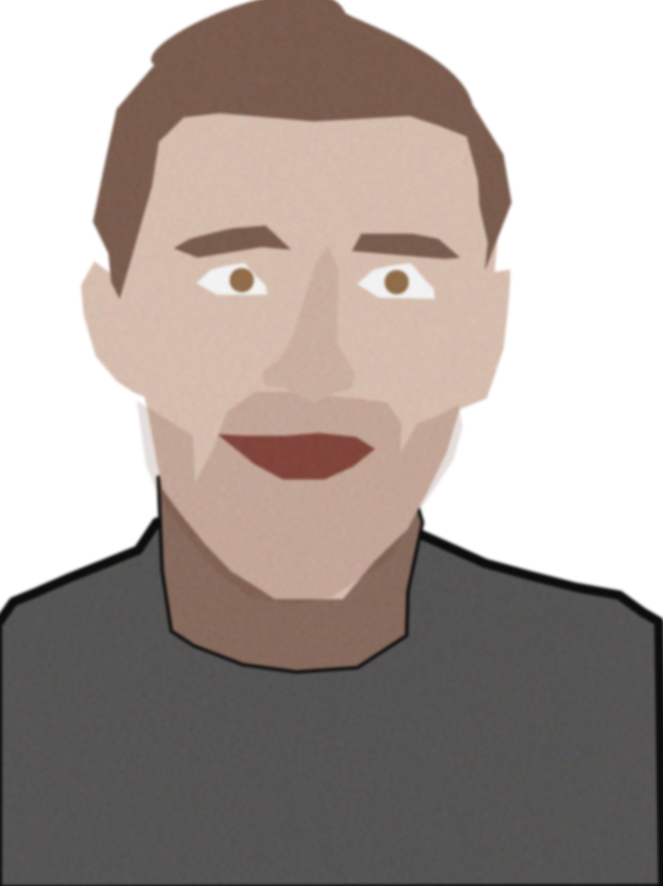
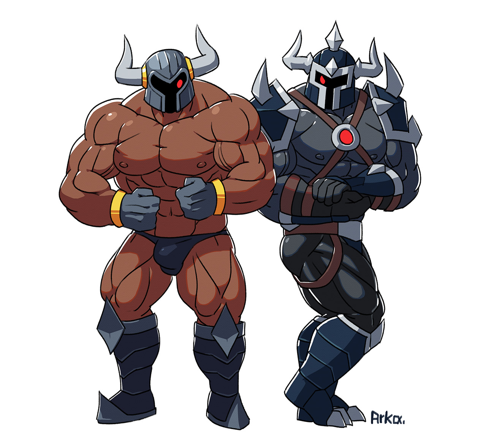

Bonjour et bienvenue dans mon portfolio !
Qui suis-je?
Je suis un développeur de 20ans. Je serais ravi de partager avec vous mes compétences, mes qualités humaines ainsi que mes passions.
Ce qui me distingue, c'est ma capacité à communiquer efficacement, ma curiosité insatiable. Tout en étant conscient de mes défauts, tels que mon manque de tact parfois et ma motivation fluctuante,
je mets en avant ma franchise et ma capacité à travailler en équipe sereinement.

Compétences techniques :
En tant qu'ancien étudiant en informatique, je suis doté d'une solide base de connaissances en programmation, en algorithmie et en développement logiciel.
J'ai une bonne maîtrise des langages de programmation tels que Java, Python et C++, ainsi que des technologies web telles que HTML, CSS et JavaScript.
J'ai également acquis des compétences en conception et en gestion de bases de données.
Mon parcours en classe préparatoire m'a permis de développer une capacité de résolution de problèmes complexe et de pensée analytique.
Qualités humaines :
Ma franchise est l'une de mes plus grandes qualités humaines. Je crois fermement qu'une communication transparente et honnête est essentielle pour établir des relations professionnelles solides. Je suis également doté d'un excellent relationnel, ce qui facilite ma collaboration avec mes collègues et mes supérieurs hiérarchiques. J'ai la capacité de comprendre les besoins des autres et de m'adapter en conséquence, ce qui favorise un environnement de travail harmonieux. Ma capacité à travailler en équipe sereinement me permet de contribuer efficacement à des projets communs.

Passions :
En dehors de l'informatique et du travail, je suis passionné par le jeu de rôle, la musculation et les sports de combat. Le jeu de rôle m'aide à développer ma créativité, ma capacité d'adaptation et ma résolution de problèmes dans des contextes imaginaires. La musculation et les sports de combat sont pour moi des moyens de me maintenir en forme, de canaliser mon énergie et de développer ma discipline personnelle.
Conclusion :
En résumé, je suis un développeur qui aspire à devenir ingénieur. Mes compétences techniques que je crois solides, ma curiosité, ma franchise, et ma capacité à travailler en équipe sont des atouts essentiels pour réussir dans le domaine de l'informatique.
Tout en reconnaissant mes défauts, je m'efforce de les surmonter en cultivant une motivation constante. Je suis impatient de mettre mes compétences et mes qualités au service d'une entreprise ou d'un client dynamique aux projets et idées innovantes.